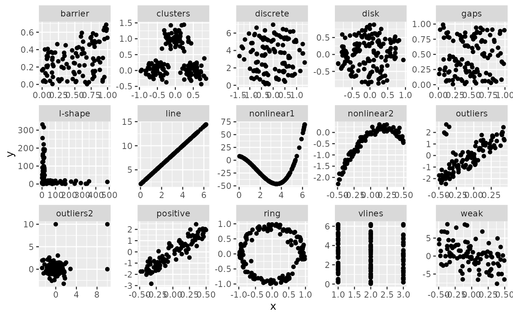

Compute convex scagnostic measure
sc_convex(x, y)
# Default S3 method
sc_convex(x, y)
# S3 method for class 'scree'
sc_convex(x, y = NULL)
# S3 method for class 'list'
sc_convex(x, y)A "numeric" object that gives the plot's convex score.
require(ggplot2)
require(dplyr)
ggplot(features, aes(x=x, y=y)) +
geom_point() +
facet_wrap(~feature, ncol = 5, scales = "free")

features %>% group_by(feature) %>% summarise(convex = sc_convex(x,y))
#> # A tibble: 15 × 2
#> feature convex
#> <chr> <dbl>
#> 1 barrier 0.761
#> 2 clusters 0.415
#> 3 discrete 0.886
#> 4 disk 0.895
#> 5 gaps 0.751
#> 6 l-shape 0.0460
#> 7 line 0.275
#> 8 nonlinear1 0
#> 9 nonlinear2 0.200
#> 10 outliers 0.411
#> 11 outliers2 0.111
#> 12 positive 0.598
#> 13 ring 0.284
#> 14 vlines 0
#> 15 weak 0.837
sc_convex(datasaurus_dozen_wide$away_x, datasaurus_dozen_wide$away_y)
#> [1] 0.5187044